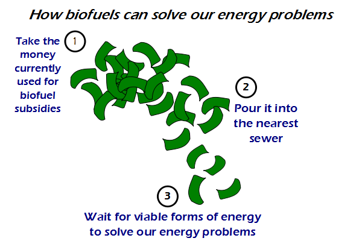

Comic JK 771
When I Feel Like It
⇤
<
?
>
⇥

⇤
<
?
>
⇥
Forum
.
RSS
.
Digg
.
Facebook
.
Reddit
.
Twitter
.
Stumbleupon
Enter your thoughts on number 771 here. Please, no spamming, trolling, or making biofuels. As A biotechnologist process engineer, I take offense in this. > Biofuel is baloney. Why don't you get a respectable job, like syphilitic hooker? > As part of your biotechnologist engineering education, did they cover practical efficiency compared to other energy sources, and take into account land usage and all significant inputs? Well? Did they? Just because you can do it, it doesn't necessarily mean it's a good idea. >> Stop and think a second. How do you think they will ever get better? Just know that people got really mad at the US Govt for funding research into heavier-than-air powered flight. About 3 days after losing their stomach for trying (the test pilot almost died), the Wrights succeeded. You can't solve technological problems without at some point funding it. >>> That's not quite fair. No one is opposed to government funded research. What we have with biofuels, is government-backed, industrial-scale deployment of an immature, currently impractical technology, and that is where people object. It's like the government pouring money into personal travel using Wright-style planes as a replacement for trains at that time, which of course didn't happen because it would be stupid. >>>>I'm not opposed to all government funded research (pure research is helpful as a public good. Applied technology is an area where the government tends to dump money into a money pit. See the gov'ts recent loss of 500 mil in two years trying to give cheap loans to Solyandra to make solar panels) I don't think the Wright Bros. anecdote even supports the effectiveness of government funded research. The government funded a topic, failed miserably and then quit. Then two guys working out of their garage succeeded? And this supports the effectiveness of gov't funded research? If we have to offer government money for applied science, lets try an x-prize model. If biofuel was really viable, it wouldn't need subsidies >If the above statement was correct no new technology would be "viable" since they all require subsidies at the beginning (note: I'm against bio-fuels, but I'm pro-solar and pro-wind, which currently require subsidies). >Who subsidized cars to take over horses? > Oil and corn get subsidies, and you can't say those aren't "viable." >Biofuels are viable, just not in their current form. Basically, as a human race, we've taken an excellent idea and implemented it in the worst possible way. Well done us! Personally, I think there should be more tidal generators in the world. They are like more efficient wind farms. (ie, 1 tidal = approx 4 wind) >Solar farms? More like lunar farms... Yes - biofuels using corn and stuff is crap. Better is sugar cane and other things, or even better is enzymes that process byproducts/waste from existing crops. We are trying to make biofuels out of corn because the corn lobby is suprisingly powerful. Just because corn is horribly inefficient doesnt mean biofuels as a whole are a bad idea. Also, technically speaking, all power sources give out less energy than you put in. Biofuels in the Netherlands get no subsidies. And still there's and entire university department working on it. Guess something's going right here. Honestly, algea bioreactors are pretty damn efficient. Why don't we walk off both the fuel and the morbid obesity crisis? > Big Corn is horrid. Too much fertilizer runoff into the Mississippi. Dead zones form in the Gulf between hurricanes. They need to develop a reclamation system that could recover and reuse the chemicals. In fact i think they should go fuill hydroponic.